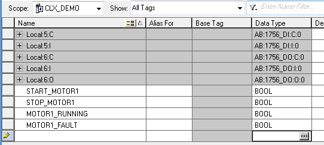

[Logix] Bài 8: Sử dụng kiểu dữ liệu User Defined trong RSLogix 5000
Ngày đăng: 21/10/2012 — Cập nhật: 2025
Tiếng Việt | English below

Ngoài các kiểu dữ liệu cơ bản như INT, DINT, BOOL, STRING, RSLogix 5000 cho phép người dùng định nghĩa các kiểu dữ liệu riêng (User Defined Data Type) để tối ưu hóa lập trình hướng đối tượng. Ví dụ: tạo đối tượng MOTOR với các thành phần START, STOP, RUNNING, FAULT...
Tạo mới User Defined Data Type
Chọn New Data Type trong phần cấu hình.
(Một số hình minh họa không còn file gốc, vui lòng tham khảo tài liệu chính thức bên dưới)
- Nhập tên kiểu dữ liệu cho đối tượng mới (ví dụ: MOTOR).
- Nhập các thành phần của đối tượng và chọn OK để hoàn tất.
- Kiểu dữ liệu mới sẽ xuất hiện trong danh sách.
Tạo Tag mới với kiểu dữ liệu vừa tạo
Trong Controller Tag, tạo Tag mới (ví dụ: MOTOR1) với kiểu dữ liệu là MOTOR.

Các thành phần của MOTOR sẽ tự động được tạo ra và sẵn sàng sử dụng trong chương trình.
Ghi chú
- Khi chỉnh sửa kiểu dữ liệu, các Tag liên quan sẽ tự động cập nhật.
- Có thể Export/Import kiểu dữ liệu giữa các chương trình.
Tài liệu tham khảo
Tài liệu chính thức của Rockwell Automation
Giap Van Vy – 2012
[Logix] Lesson 8: Using User Defined Data Types in RSLogix 5000
English version
Besides basic data types like INT, DINT, BOOL, STRING, RSLogix 5000 allows users to define custom data types (User Defined Data Type) for object-oriented programming. For example, create a MOTOR object with START, STOP, RUNNING, FAULT fields...
Create a new User Defined Data Type
- Select New Data Type in the configuration.
- Enter the name for the new data type (e.g., MOTOR).
- Enter the fields and click OK to finish.
- The new data type will appear in the list.
Create a new Tag with the new data type
In Controller Tag, create a new Tag (e.g., MOTOR1) with data type MOTOR.
The MOTOR fields will be automatically created and ready to use in your program.
Notes
- Editing the data type will automatically update all related Tags.
- You can Export/Import data types between projects.
Reference
Official Rockwell Automation documentation
Giap Van Vy – 2012